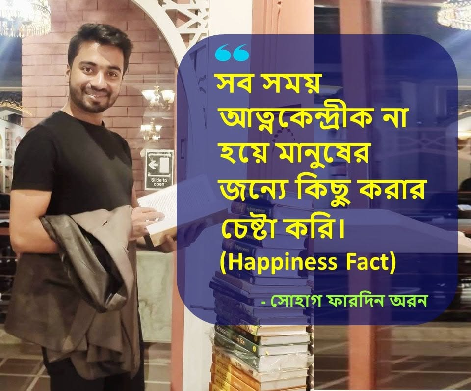

Career Strategy
Career decisions, transitions, growth barriers and long-term direction.
Career decisions, transitions, growth barriers and long-term direction.
Positioning, credibility, professional identity, reputation and visibility.
Skills, communication, networking, leadership readiness and executive presence.
AI, changing industries, future skills and how professionals can remain relevant.

Insights do not always need to be formal articles. Short reflections, practical observations and lived experience can also strengthen a credible professional point of view.
These are the recurring questions behind the work: career decisions, professional positioning, credibility, visibility and staying relevant as work changes.
How to think more clearly about your next role, a career transition or a longer-term direction.
How expertise, career story and professional identity can become easier to understand and remember.
Why stronger communication, positioning, networking and executive presence should reinforce one another.
How professionals can think about skills, AI, changing industries and long-term relevance.